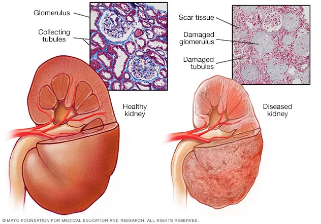
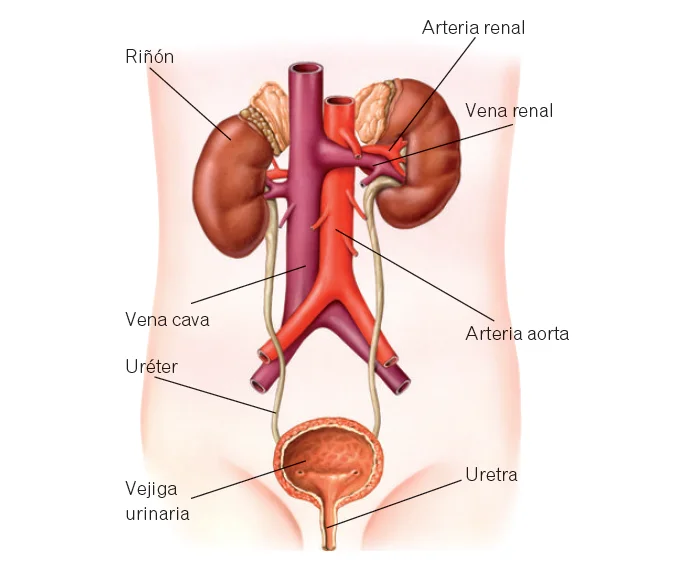

Insuficiencia renal
Descripción
La insuficiencia renal es una afección en la cual los riñones pierden la capacidad de filtrar los desechos, las toxinas y el exceso de líquido de la sangre. Puede presentarse de forma aguda (aparición repentina) o crónica (pérdida progresiva de la función renal a lo largo de meses o años).

Mapa Anatómico Interactivo del Sistema Urinario
Haz clic en las diferentes partes del sistema urinario en la imagen para obtener más información anatómica (serás redirigido a un artículo sobre esta zona anatómica de la página Kenhub).

Causas
Las dos causas más comunes de la insuficiencia renal crónica son:
- La diabetes (tipo 1 y tipo 2), que daña los pequeños vasos sanguíneos del cuerpo.
- La presión arterial alta (hipertensión), que ejerce una presión excesiva sobre los filtros renales.
Otras causas incluyen enfermedades autoinmunes (como el lupus), infecciones renales recurrentes y el uso prolongado de ciertos medicamentos nefrotóxicos.
En el siguiente vídeo explicativo se resumen los distintos sintomas y causas de la Enfermedad Renal Crónica:
Síntomas
En las primeras etapas, es posible que no se presenten síntomas evidentes. A medida que la enfermedad avanza, pueden aparecer:
- Disminución del volumen de orina.
- Retención de líquidos, que causa hinchazón (edema) en piernas, tobillos o pies.
- Fatiga persistente y debilidad.
- Dificultad para respirar y confusión mental en etapas severas.
Pruebas y exámenes
Para diagnosticar y evaluar el daño renal, se utilizan las siguientes pruebas:
- Análisis de sangre: Miden los niveles de creatinina y nitrógeno ureico (BUN) para calcular la tasa de filtración glomerular (TFG).
- Análisis de orina: Buscan anomalías como la presencia de proteínas (proteinuria) o sangre.
- Ecografía renal: Permite visualizar el tamaño y la estructura de los riñones.
Tratamiento
El tratamiento se centra en ralentizar la progresión del daño controlando la causa subyacente (por ejemplo, medicación para la hipertensión). En las etapas finales (enfermedad renal terminal), las únicas opciones son la diálisis (hemodiálisis o diálisis peritoneal) o un trasplante de riñón.
Expectativas (Pronóstico)
La insuficiencia renal aguda suele ser reversible si se trata rápidamente. Sin embargo, la insuficiencia renal crónica no tiene cura. Los pacientes pueden llevar una vida funcional durante muchos años con tratamientos médicos, cambios estrictos en la dieta y terapias de reemplazo renal.